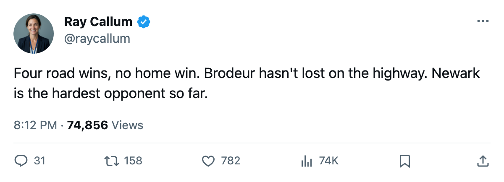

NJ
NJNumbers Game: New Jersey Is 4-0-0 on the Road and 0-2-0 at Home
Three straight wins, all away from Newark, and the building is still waiting for a victory
 Ray CallumSenior correspondent · Home Ice Network
Ray CallumSenior correspondent · Home Ice NetworkThe Devils have won every game played away from Newark and lost every game played at it. Four road wins, zero home wins, 6 games, 9 points, and a 3-game winning streak that started on the highway.
 Martin Brodeur95 has taken 5 of 6 starts, including all 4 on the road. The Devils scored 18 and allowed 13 through those 6 games. On the road, they have looked like a top-4 Eastern Conference club. At home, they have not.
Martin Brodeur95 has taken 5 of 6 starts, including all 4 on the road. The Devils scored 18 and allowed 13 through those 6 games. On the road, they have looked like a top-4 Eastern Conference club. At home, they have not.
New Jersey's last two wins came on a back-to-back road trip: 4-2 at Atlanta on October 23, then 4-2 at Buffalo on October 25. Same scoreline both nights.
The Devils sit 6th in the East with 9 points from 6 games. Every club above them has played 7 or more. If the home ice flips, this table reads differently. If it does not, the travel log is carrying them.
New Jersey signed Jeff Friesen on October 21 at $117,870. He has not appeared in a Devils sweater in any result this edition covers.
Their next game is October 29 at home against Carolina, which they beat 3-1 on the road earlier this season. The Hurricanes are 4-3-1, 2-2 at home, 2-2 on the road.  Kevin Weekes88 has started 7 of 8 for Carolina.
Kevin Weekes88 has started 7 of 8 for Carolina.
Brodeur has played 5 of 6.  Michael Leighton80 has played 1. The share is 83 percent to 17 percent.
Michael Leighton80 has played 1. The share is 83 percent to 17 percent.
